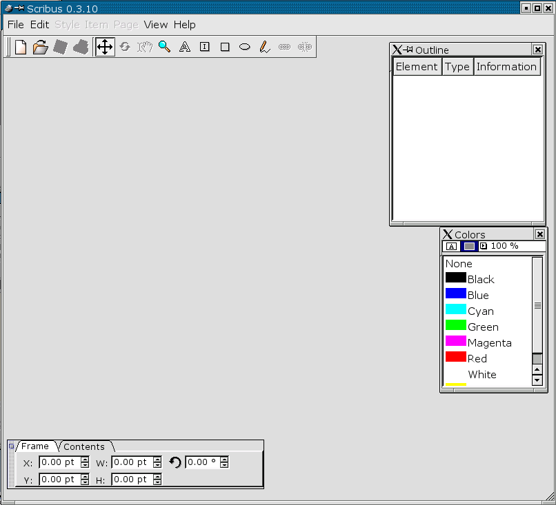

1.3 Programmstart und erste Schritte
Wenn Sie anstelle der englischen Menübezeichnungen die deutschen verwenden wollen, geben Sie bitte vor
dem Programmstart
export LANG=de
ein. Starten Sie anschließend das Programm durch Eingabe von
scribus
an der Kommandozeile. Danach sollten Sie ungefähr folgendes sehen:

Mittels dem Menüpunkt File/New können
Sie ein neues Dokument erzeugen und anschließend bearbeiten